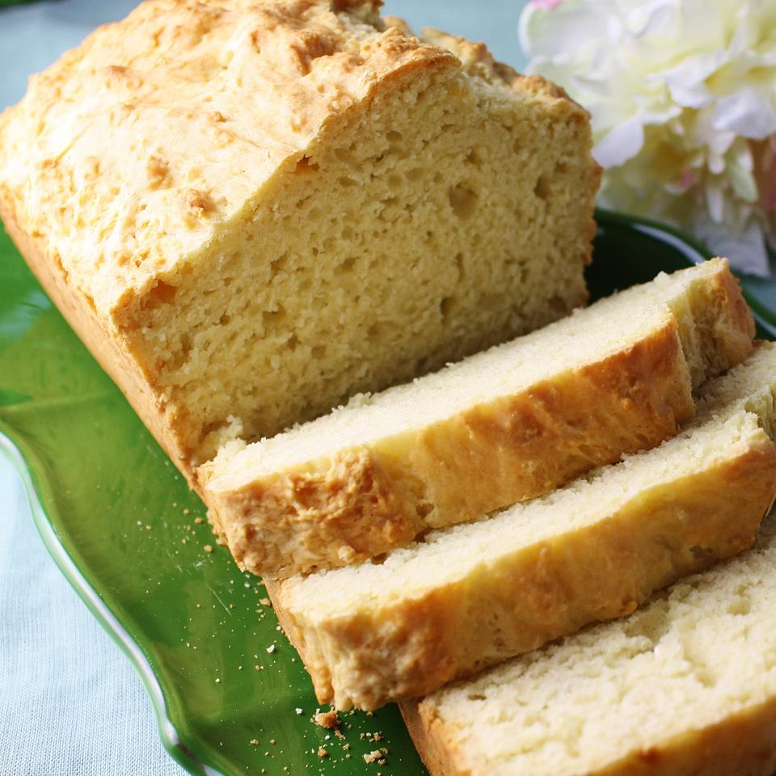

Irish Bread

Irresisatble irish bread that you must try
Ingredients
- 3 cups all-purpose flour
- 1 tablespoon baking powder
- 1/3 cup white sugar
- 1 teaspoon salt
- 1 teaspoon baking soda
- 2 cups buttermilk
- 1/4 cup butter, melted
Steps
- Preheat oven to 325 degrees F (165 degrees C). Grease a 9x5 inch loaf pan.
- Combine flour, baking powder, sugar, salt and baking soda. Blend egg and buttermilk together, and add all at once to the flour mixture. Mix just until moistened. Stir in butter. Pour into prepared pan.
- Bake for 65 to 70 minutes, or until a toothpick inserted in the bread comes out clean. Cool on a wire rack. Wrap in foil for several hours, or overnight, for best flavor.